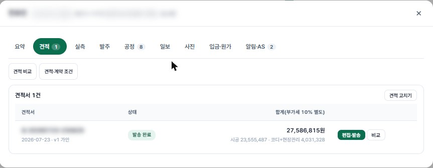

30%가 줄어드는 까닭
견적의 근거를 전부 보여 드립니다

고르는 대로 금액이 바뀝니다
덧방이냐 철거냐, 실크냐 합지냐. 고를 때마다 예상 공사비가 그 자리에서 바뀝니다.
무료 · 가입 없이 · 수도권 10,241개 단지

받는 돈을 따로 적습니다
견적서에 시공비와 집지니가 받는 코디 비용이 나뉘어 있습니다. 줄 속에 숨긴 마진이 없습니다.
같은 사양 턴키 견적 대비 20~30% 낮은 수준
30%가 줄어드는 까닭
덧방이냐 철거냐, 실크냐 합지냐. 고를 때마다 예상 공사비가 그 자리에서 바뀝니다.
무료 · 가입 없이 · 수도권 10,241개 단지

견적서에 시공비와 집지니가 받는 코디 비용이 나뉘어 있습니다. 줄 속에 숨긴 마진이 없습니다.
같은 사양 턴키 견적 대비 20~30% 낮은 수준
직접 하실 분과 맡기실 분, 어느 쪽이든 같은 도면에서 시작합니다. 직접 꾸며 보다가 의뢰로 넘어가셔도 그린 도면이 그대로 이어집니다.
지도에서 아파트를 고르고, 그 집 평면 위에서 자재와 공법을 골라 보세요. 물량과 예상 공사비가 그 자리에서 셈해집니다.
| 비용 | 무료, 가입 없이 |
| 단지 | 수도권 10,241곳 · 평면 확보 673곳 (2026-11-11) |
| 도면 열림 | 집지니 도면으로 바로 열리는 단지가 날마다 늘어납니다 |
| 나오는 것 | 공정별 도면, 자재 물량, 예상 공사비(어림·부가세 별도) |
| 맞는 분 | 기술자를 직접 구해 공사하실 분, 얼마 드는지 먼저 보고 싶은 분 |
코디가 도면을 그려 물량을 세고, 자재상·기술자를 업체 마진 없이 직거래로 연결해 공정을 조율합니다.
| 견적 | 의뢰 뒤 24시간 안에 정밀 견적서와 공정별 도면 |
| 값 | 같은 사양 턴키 견적 대비 20~30% 낮은 수준 근거 |
| 코디 비용 | 정찰제 공시가 보기 · 12개월 A/S |
| 맞는 분 | 값은 줄이고 싶지만 기술자 섭외와 공정 관리는 맡기고 싶은 분 |

부동산 앱에서 갈무리한 평면도 그림 한 장이면 됩니다. 집지니가 방을 나눠 도면으로 다시 그리고, 그 위에 공사할 것을 표시하면 물량과 예상 공사비, 작업지시서가 나옵니다. 저희가 현장에서 쓰려고 만든 도구를 그대로 열었습니다.
| 도면 | 평면도 그림을 읽어 방·창·문을 다시 그립니다. 전용면적을 넣으면 벽 길이를 잡습니다. |
| 평면도가 없을 때 | 주택·빌라·상가처럼 평면도가 없으면 직접 그립니다. 줄자로 잰 집 크기로 시작해 방 크기대로 자르고 붙이면, 벽·창·문은 저절로 들어갑니다. |
| 캐드 파일 | 설계사무소에서 받은 오토캐드 파일(.dwg · .dxf)도 그대로 열어 고칩니다. 다 그린 도면은 오토캐드 파일·피디에프·사진으로 저장하고, 벽·문·창·공사 표시가 공종별 층으로 나뉘어 있어 시공사가 바로 씁니다. |
| 작업 지시 | 철거부터 가구까지 공사 순서대로 기호를 놓고, 도배 초배나 타일 붙임 같은 공법을 고릅니다. |
| 물량 | 놓은 기호가 공종별 넓이·길이·개수로 모입니다. 도면 기준 어림이라 주문 전에는 실측합니다. |
| 예상 공사비 | 기호를 놓거나 공법을 바꿀 때마다 금액이 바로 바뀝니다. 공종별 내역과 셈한 근거를 볼 수 있습니다. 도면 기준 어림이고 부가세는 별도입니다. |
| 정밀 견적 | 그린 도면을 그대로 보내면 코디가 빠진 항목과 공사 순서, 현장 조건을 검토해 24시간 안에 견적서를 보내 드립니다. |
| 작업지시서 | 필요한 공종만 골라 한 장으로 인쇄하거나 그림으로 저장합니다. |
무료이고 가입이 없습니다. 올린 그림과 도면은 쓰시는 기기에만 저장됩니다. 글자가 흐리거나 손으로 그린 평면도는 잘 읽지 못합니다.
집지니 CAD 열기사용법 보기집지니가 그 30%를 건축주에게 돌려드립니다.
정밀 의뢰서 5분 입력 → 24시간 내 자동 견적서 무료 · 부분 수리 3개 이상부터 · 모든 상담 온라인
서비스 개념
인테리어에는 두 가지 길이 있습니다. 집지니는 그 사이에서 당신을 돕는 서포터입니다.
시장 구조
턴키는 비싸고, 직영은 힘듭니다.
집지니는 직영을 코디로 돕는 다이렉트 코디입니다.
의뢰 가능 범위
모든 의뢰를 받지 않습니다. 집지니가 가치를 만드는 규모부터 받습니다.
견적 수량은 흔히 평수에 계수를 곱해 잡습니다. 저희도 그렇게 낸 84㎡ 견적을 그 아파트 평면도에 공정별로 다시 그려 봤더니, 욕실 타일이 12㎡쯤, 매입등이 15개 모자랐습니다.
그래서 순서를 바꿨습니다. 단지 평면도가 있는 집은 도면에 작업을 먼저 그리고, 거기서 나온 수량으로 견적을 냅니다.
| 공정별 도면 | 철거부터 가구까지 공정마다 한 장씩 그립니다. 그 공정의 작업만 표시해서 현장에서 그대로 봅니다. |
| 수량 대조 | 견적 수량과 도면에서 셈한 수량을 줄마다 견줘, 모자라는 곳을 계약 전에 찾습니다. |
| 순서 확인 | 젠다이 조적은 방수 앞, 욕실 천장은 벽타일 뒤처럼 순서가 걸리는 곳을 도면에서 먼저 짚습니다. |
| 조명·배선 | 방 넓이로 매입등 개수를 셈하고, 등까지 가는 천장 배선 길이도 함께 그립니다. |
| 고객 확인 | 금액과 내부 메모를 뺀 공정별 도면을 고객 전용 페이지 서류함에 올려 드립니다. |
치수 없는 평면도에서 셈한 값은 어림입니다. 자재 주문 전에는 실측으로 확정하고, 평면도를 구하지 못한 집은 실측 뒤에 그립니다.
기존 인테리어 업체는 사람이 일일이 챙겨서 관리비가 견적의 30%를 차지합니다.
집지니는 시스템이 챙기니까 그 30%가 그대로 건축주 주머니에 남습니다.
부분 수리 3개 이상부터 의뢰 가능. 의뢰 규모에 관계없이 절약률은 일관됩니다.
정밀 의뢰서
24시간 내 자동 견적서 무료 수령. 정찰제 · 마진 0% · 별도 결제 단계 없음.